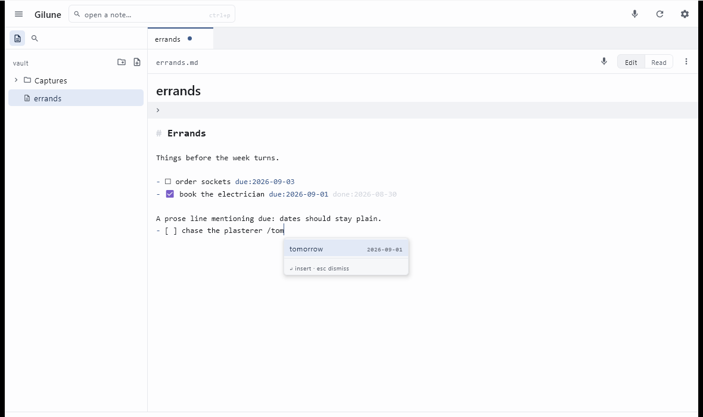
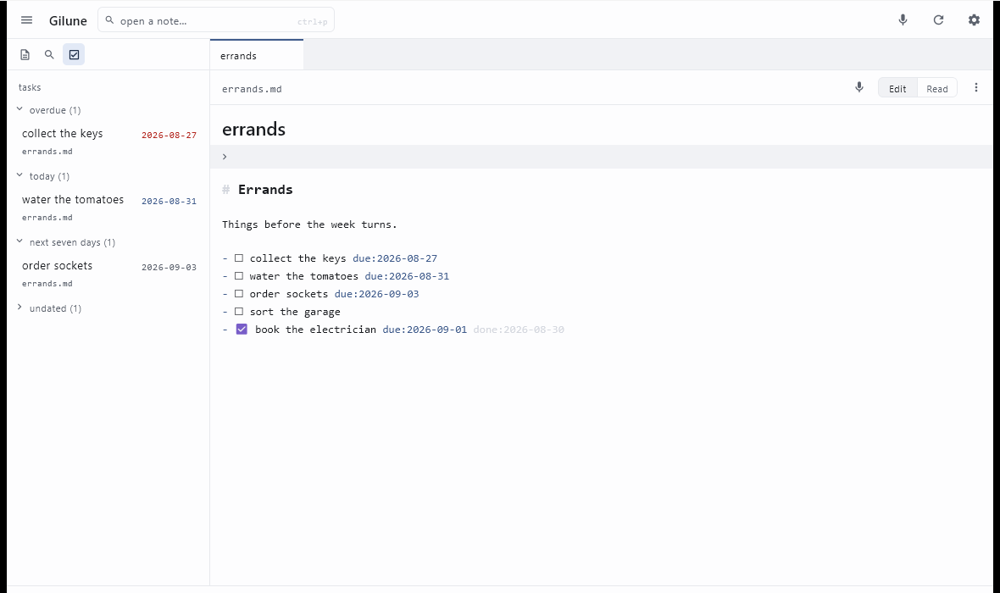
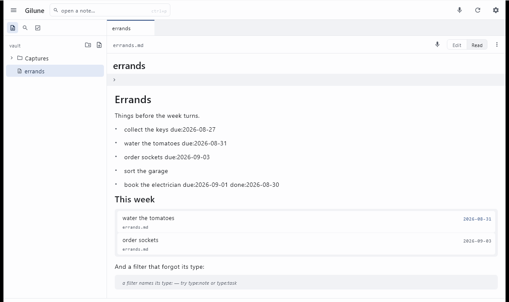

Tasks
A task in Gilune is just a checkbox in a note. There is no separate task list holding your work hostage — the tasks are the lines you wrote.
Making a task
Type a checklist item anywhere in any note:
- [ ] ring the plumber
- [ ] send the photos to MumThat is all it takes. The line becomes a checkbox you can click, and it counts as
a task everywhere else in the app — the agenda, search, filter blocks. You can indent
them under other lines, and -, * and + all
work as the bullet.
The space inside the brackets matters: - [ ] is a task and
- [] is not. This is the same rule Obsidian uses.
Subtasks and notes on a task
A task nested under another is its subtask, and anything else indented under a task belongs to it — a line of detail, a link, a person:
- [ ] Prepare the show and tell due:2026-10-30
owner: @alice.smith
Need the latest build and the samples.
- [ ] Fill gaps on the inputs
- [ ] Book the roomYou don't need to count spaces. Press Return at the end of a task for the next one, then Tab to nest it under the task above; Shift + Tab lifts it back out. Each Return after a subtask starts another at the same level, and Return on an empty one steps back out to the level above — so a second Return takes you from the last subtask to the next main task. Select several lines and Tab nests them all.
For a note rather than a subtask, press Shift + Return at the end of the task: the new line sits under the task's text with no checkbox. Press it again to carry on the note on another line.
Giving a task a due date
You do not have to remember a date format. Type / on the task line
and tell Gilune in words.

- Put your cursor on the task line and type
/. It has to be at the start of the line or after a space — so a/in the middle of a word stays an ordinary slash. - A small menu appears offering Due date. Press Enter.
- Type a phrase — today, tomorrow, friday, next
week, in a week — or type a date as
2026-09-04. The list narrows as you type and shows the real date beside each option. - Use ↑ and ↓ if you want a different one, and press Enter.
The line then reads:
- [ ] ring the plumber due:2026-09-04Words are for typing; the file gets a real date. Nothing stores "tomorrow", because tomorrow moves. The date is worked out at the moment you press Enter and written in full, so the note still means the same thing in six months, and so any other editor can read it.
A few details worth knowing:
- A weekday always means its next occurrence and never today — say tuesday on a Tuesday and you get the Tuesday a week away. Today is already one keystroke away as today.
- Esc closes the menu and leaves everything you typed exactly where it was. The menu never removes your characters; accepting a date is what replaces them.
- If you are halfway through typing a date, Enter does nothing until it is a date Gilune can actually resolve. Nothing half-finished gets written.
Ticking things off
Click the checkbox. As well as ticking it, Gilune adds the day you finished it:
- [x] ring the plumber due:2026-09-04 done:2026-09-02Untick it and the done: date comes off again. Ticked tasks drop out
of the agenda, and you can find them later with a search like
type:task done:week.
Choosing which checkboxes count
By default every checklist item in your vault is a task. If you use checkboxes for other things — packing lists, shopping, a table of contents — you can narrow it down.
Go to Settings ▸ Plugins, open the tasks plugin, and fill in
Global filter. Set it to something like #task and only
checkbox lines containing that text get the / menu, the coloured dates,
the agenda and type:task. Everything else stays an ordinary checkbox you
can still tick.
Nothing in your vault is rewritten either way, and the change takes effect as soon as you apply it.
The agenda

The tasks plugin adds a panel to the sidebar that gathers every open task in the vault into four short lists:
- overdue — due before today.
- today — due today.
- next seven days — tomorrow through a week from today.
- undated — no due date at all. This one starts folded up, since it tends to be the longest and the least urgent.
Click a heading to fold or unfold a list. A task with notes or subtasks shows the same summary as in a filter block, and a click on it opens the row. Each row shows the task, the note it came from, and its date, coloured by how close it is. Clicking a row opens that note with the cursor on the task — the agenda only ever reads your notes, it never edits them, so you tick things off where you wrote them.
Ticked tasks are not listed; an agenda is about what is still open. Neither is
anything due more than a week out — four short lists are the point, and a query like
type:task due:after:… is the right way to look further ahead. If a list
is very long it shows the first fifty and counts the rest.
An agenda with nothing in it says which nothing it is. If you have not written a
task yet it explains what one looks like and offers a Start a task
button, which takes you to a fresh capture with - [ ] already typed and
the cursor after it — and leaves anything you were part way through writing exactly
as it was. If you do have tasks but they are all ticked or all further out than a
week, it says so instead, and points at type:task in search for the
ones beyond the lists.
To turn the panel off entirely, use the Agenda panel switch on
the tasks plugin's settings screen. The plugin keeps colouring your dates and
offering the / menu; only the panel goes.
Live lists inside a note
Sometimes the list belongs in a note rather than in a panel — everything for one
project, on that project's page. Write a fenced code block labelled
filter:
```filter
type:task
is:open
path:Projects/Kitchen
```Gilune renders that as a live list of everything matching, right there in the note. Clicking a row opens the note the task lives in, with the cursor on the task and the line flashing briefly so your eye finds it.
A task with notes or subtasks under it shows a small summary at the end of its
row — ▸ 1 note · 1/2 done. Click it to open that row and see the notes and
subtasks beneath it; the subtasks have their own boxes to tick. Click again to fold
it. To have a list open every row from the start, add a line saying
show:notes to the block:
```filter
type:task
is:open
show:notes
```A subtask that matches the query is also listed on its own, as well as under its parent.
A new vault comes with a page called Tasks at the top of the vault, full of lists like this one — overdue, due today, this week, not dated yet and done this week — to use as they are or to copy and change. Gilune writes it once; edit it however you like, and if you delete it, it stays deleted.

The rules are small:
- One filter per line, and they all have to match. It is the same query language the search panel uses — the lines are simply joined together. Blank lines are ignored.
- Every block must say
type:—type:taskfor task lines,type:notefor whole notes. Gilune will not guess what you meant. - A block shows a page of rows — eight while you are writing the note, fifty in presentation mode — and counts the rest. Click +N more to show the next fifty, and Show fewer to fold the list back.
- Task lines written inside a code block are never treated as real tasks, so the examples on this page could never end up in somebody's agenda.
If a block cannot be run, it says so in one quiet line rather than sitting there
looking broken: an empty block tells you an empty filter matches nothing; a block with
no type: tells you to name one and lists the ones available; and a block
naming a type that no longer exists asks whether its plugin is switched on. A block
that ran and found nothing simply says so.
Because it is an ordinary fenced code block, Obsidian, GitHub and Notepad all show it as a perfectly legible little block of text. Nothing about the note becomes unreadable elsewhere.
If you remove the tasks plugin
Your checkboxes stay checkboxes and still tick. What goes is the extra: the
/ menu, the coloured dates, the agenda panel, and
type:task in searches. Any due: and done: dates
already written into your notes stay exactly as they are — they are just text — and
come back to life if you switch the plugin on again.